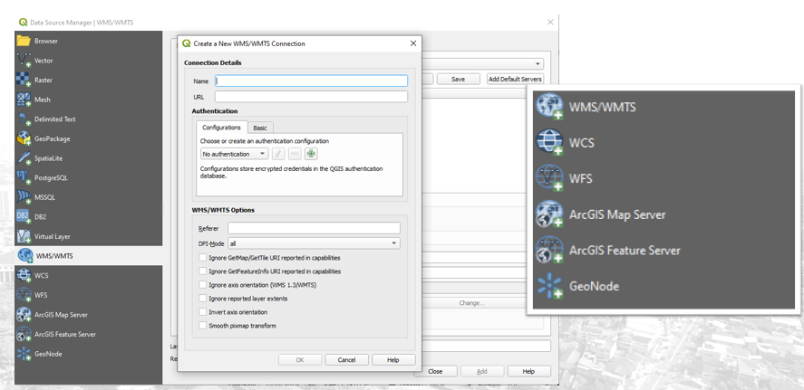
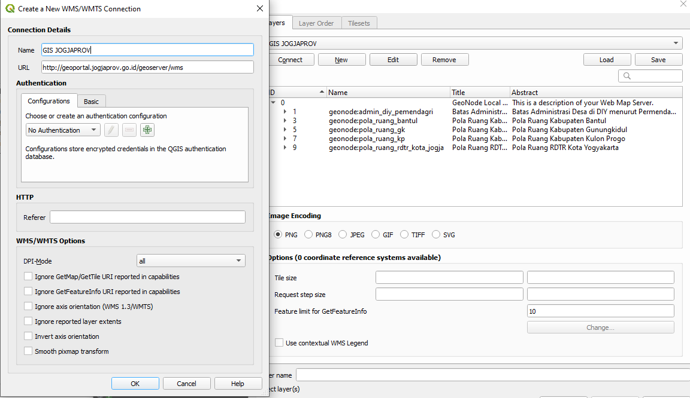
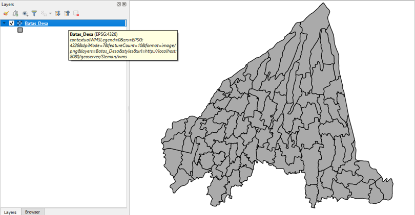
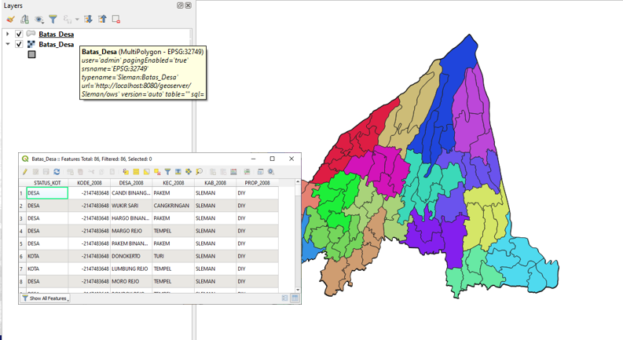
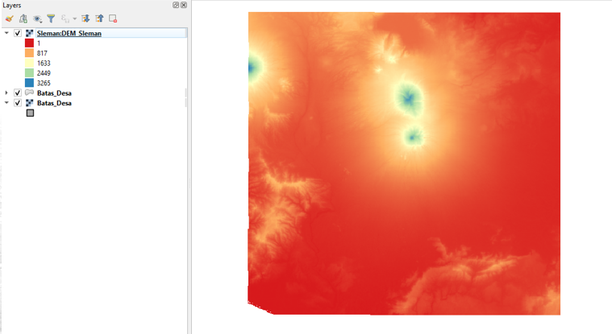

Konsumsi Data dengan Standar OGC¶
Dengan publikasi pada Geoserver, layer yang tersimpan tersebut akan dapat dipanggil dari berbagai macam client. Seperti tujuan awal penggunaan server data spasial, terdapat beragam client yang mendukung standar internasional OGC, sehingga dengan menggunakan standar tersebut, berbagai layanan dapat dikombinasikan dengan memperhatikan prinsip-prinsip FAIR. Pada bagian ini akan dibahas mengenai bagaimana menggunakan perangkat FOSS untuk mengakses layanan OGC yang disajikan dari Geoserver.
Menggunakan Perangkat FOSS untuk mengakses data OGC¶
Berbagai perangkat FOSS dapat saling berkomunikasi dengan bantuan dukungan standar OGC. Untuk latihan ini, QGIS akan digunakan sebagai perangkat client untuk memanggil data dari Geoserver. Anda juga dipersilahkan untuk mencoba perangkat lunak lain, seperti uDIG atau gvSIG yang memiliki kemampuan serupa.
{kind=link}
Standar-standar OGC menggunakan rangkaian parameter pada URL yang digunakan untuk memanggil berbagai layanan sesuai fungsinya, seperti WMS, WFS maupun WCS. Dari parameter inilah aplikasi client dapat digunakan untuk memanggil layanan yang dibutuhkannya. Perangkat lunak seperti QGIS dapat memanggil beragam layanan yang menggunakan standar OGC ini.
Memanggil WMS, WFS dan WCS dengan QGIS¶
Apabila kita perhatikan, link publikasi WMS dari Geoserver adalah seperti berikut. Link ini dapat dipanggil dari Layer Preview, kemudian memilih WMS atau WFS:
**http://localhost:8080/geoserver/Sleman/wms?**
service=WMS
&version=1.1.0
&request=GetMap
&layers=Sleman%3ABatas_Desa
&bbox=413535.5625%2C9133697.0%2C450074.4375%2C9166253.0
&width=768&height=684
&srs=EPSG%3A32749
&format=image%2Fpng
Sedangkan berikut adalah link publikasi untuk WFS:
**http://localhost:8080/geoserver/Sleman/ows?**
service=WFS
&version=1.0.0
&request=GetFeature
&typeName=Sleman%3ABatas_Desa
&maxFeatures=50
&outputFormat=application%2Fgml%2Bxml%3B%20version%3D3.2
Baris-baris di atas menunjukkan parameter yang dapat diakses dari client, dan disebut sebagai key-value pair (KVP), dimana tiap kunci berisi parameter yang dapat diatur untuk memanggil WMS yang dimaksud (misalnya, format PNG atau JPG). Apabila kita menggunakan QGIS, parameter inilah yang akan dipanggil. QGIS telah menyediakan fungsi yang cukup lengkap untuk memanggil data dari Geoserver. Berikut caranya:

Tiap menu digunakan untuk memanggil layanan OGC dari jenis yang berbeda (WMS/WMTS, WFS, dan WCS). Parameter yang diperlukan untuk memanggil layer ini adalah alamat host Geoserver. Alamat ini adalah link bertanda tebal pada contoh KVP di atas. Misalnya untuk WMS:
http://localhost:8080/geoserver/Sleman/wms
QGIS selanjutnya akan memanggil seluruh layer pada Geoserver tersebut melalui WMS GetCapabilities. Berikut adalah layer yang dipanggil dari Geoserver Geoportal Propinsi Jogja melalui WMS GetCapabilitiesnya:

Apabila kita panggil layer tersebut pada QGIS, kita dapat melihat perbedaan antara WMS, WFS, dan WCS seperti berikut:

WMS dipanggil sebagai Image atau raster, sehingga kita tidak dapat melakukan simbologi pada layer tersebut. Data atribut pada WMS dapat diakses dengan menggunakan tool Feature Info pada QGIS, tetapi atribut ini hanya dapat ditampilkan, dan bukan untuk dianalisis

WFS dipanggil sebagai vektor, sehingga kita dapat melakukan simbologi, analisis spasial, dan perlakuan lain yang dapat kita lakukan pada sebuah layer vektor biasa. Seluruh atribut dan Geometri dari layer ini dapat dipanggil.

Sama seperti WMS, WCS memanggil raster dari Geoserver. Perbedaannya terletak pada nilai raster yang diteruskan ke QGIS. Pada WCS, seluruh nilai raster sama seperti data aslinya, sehingga kita dapat menggunakan simbologi pada sisi client seperti gambar di atas.
Memanggil data publikasi OGC dengan Javascript Library (LeafletJS)¶
Pada LeafletJS (dan library web map lain seperti OpenLayers, GMap API, Mapbox dst), layer secara umum terbagi menjadi dua macam, yaitu 1) Tilelayer (‘Slippy Map’) yang dapat diperoleh dalam bentuk layanan (service) dari penyedia tile, dan 2) Feature Layer yang dapat ditambahkan sendiri pada Leaflet. Tilelayer cenderung bersifat statis, tidak interaktif dan disajikan dalam bentuk ‘tile’. Tilelayer sering digunakan sebagai background atau basemap untuk peta yang akan dibuat pada sebuah webmap library seperti Leaflet. Pada Tilelayer ini tidak dapat diterapkan konsep interaktivitas, misalnya memunculkan popup berdasarkan atribut (dengan beberapa pengecualian, misalnya pada Vector Tile).
Adapun Feature Layer merupakan layer yang dapat ditambahkan pada LeafletJS Map bersumber dari data yang kita miliki. Contoh Feature layer yang banyak dijumpai adalah Marker. Pada Marker kita dapat memberikan atribut dan menerapkan interaktivitas, misalnya dengan memunculkan popup, melakukan drag and drop, dan seterusnya. Selain marker, kita juga dapat menambahkan polygon dan polyline dengan cara yang hampir sama. Feature Layer yang lain adalah GeoJSON, yang memungkinkan kita untuk menambahkan layer data spasial lengkap dengan atribut dan fungsi interaktifnya. Pada bagian ini akan dibahas bagaimana menggunakan GeoJSON untuk menampilkan data spasial (shapefile) menjadi peta yang interaktif pada LeafletJS melalui Geoserver.
Untuk memanggil data dari Geoserver menggunakan LeafletJS, dapat digunakan script seperti berikut:
var layerjalan = L.tileLayer.wms('http://localhost:8080/geoserver/wms?', {
layers: 'latihan:jalan'
}).addTo(map);
Contoh script LeafletJS tersedia pada https://github.com/danylaksono/sample-leafletjs.
Sebagai latihan, modifikasi script tersebut untuk memanggil layer KRB yang sudah diunggah pada Geoserver WSL pada alamat http://localhost:8080/geoserver sebagai WMS dan WFS, kemudian bandingkan perbedaan antara keduanya.